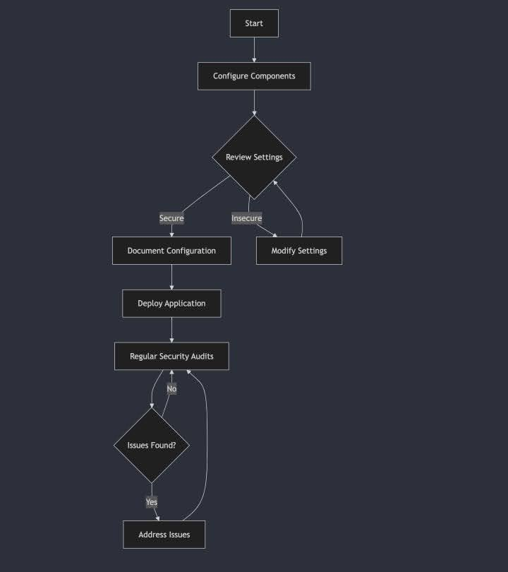
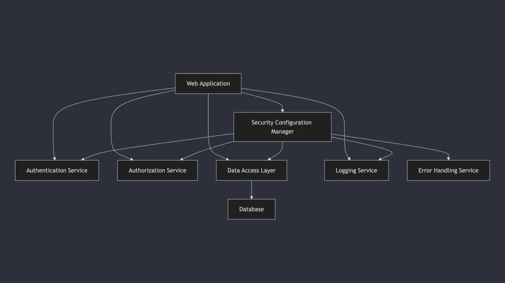
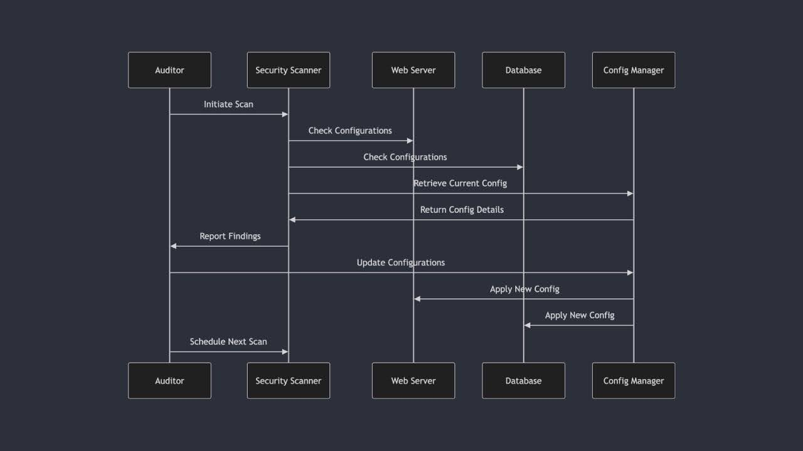

Collabrative discussion Post: Unified Modelling Language
Requirements
This discussion will last for 3 weeks covering units 1, 2 and 3. Ensure you include appropriate citations and references in all your posts (this is not included in the word count for each week's post/submission).
Discussion Topic
Open source tools are available to create UML diagrams, some are listed below. This list is not exhaustive. The benefit of using such tools is that they ensure that the recognised UML components are used to represent the parts of the model correctly.
- Visual Paradigm
- Sequence Diagram
- Umbrello
Choose an open-source UML tool from the list above. Select one of the coding weaknesses which have been identified by OWASP and create a flowchart of the steps which may have led to the weakness occurring. Which UML models might you use to present the design of your proposed software, and why are they the most appropriate choice(s)?
Learning Outcomes
- Identify and manage security risks as part of a software development project.
- Critically analyse development problems and determine appropriate methodologies, tools and techniques (including program design and development) to solve them.
Assignment Guidance
- Your initial posting should respond to the question and be at least 200 words long. This should be labelled as 'Initial Post'
- You will then respond to at least 2 of your peers' posts in unit 2 (each labelled as 'Peer Response'). To guide your responses, look at the guidelines for the peer review process on the Department's homepage. Focus on the possible measures that could have been put in place in order to prevent the incidents highlighted by your peers. Please try to limit your response posts to 200-300 words maximum, so that others may be encouraged to reflect on, and respond to your ideas.
- In Unit 3, you should provide a summary post based on your initial post, the feedback from your peers and the content of the three units. Please label this as 'Summary Post'. It should be 300 words.
- Referencing: When you have referred to other authors thoughts, ideas and opinions in your posts, you must reference the author as you would in an academic assignment using the UoEO Harvard reference style.
- Referencing: When you have referred to other authors thoughts, ideas and opinions in your posts, you must reference the author as you would in an academic assignment using the UoEO Harvard reference style.
- This activity forms a component of your e-portfolio which you will submit in unit 12. All e-portfolio activities are intended to demonstrate your ability and strengths through evidence and reflection.
Answer
Security Misconfiguration: OWASP Top 10 Analysis and UML Modelling
The Open Web Application Security Project (OWASP) Foundation plays a crucial role in web application security by providing resources and guidelines for developers and security professionals. Their "Top 10 Web Application Security Risks" document is a critical resource, identifying and prioritising the most significant vulnerabilities in web applications (OWASP Foundation, 2024). Among these identified risks, A05:2021-Security Misconfiguration is a particularly prevalent and often underestimated threat (OWASP Foundation, 2021).
Security misconfiguration is a widespread vulnerability that can occur at any level of the application stack. It affects various components including network services, platforms, web servers, databases, and custom code (OWASP Foundation, 2021). The scope of potential misconfigurations presents a huge challenge for security teams, who must ensure proper configuration across a diverse and interconnected array of system components. This complexity is further compounded by the dynamic nature of modern web applications, where frequent updates and changes can inadvertently produce misconfigurations (Fritzsch et al., 2019).
The manifestations of security misconfiguration are both varied and dangerous. Unused features left enabled act as vulnerabilities for attackers, while default accounts and passwords provide easy access to the unwary (OWASP Foundation, 2021). Overly informative error handling can inadvertently provide attackers with insights into system vulnerabilities. In the rush to upgrade systems, organisations often overlook the critical step of properly configuring new security features, leaving themselves exposed to exploits targeting known vulnerabilities in older, unpatched systems (OWASP Foundation, 2022).
To address this complex issue, we can utilise Unified Modelling Language (UML) diagrams to help visualise systems. Through a series of diagrams, we can map out security configurations and identify potential vulnerabilities.
An activity diagram can provide a high-level view of the security configuration process:
Activity Diagram This diagram highlights the critical decision points and actions in the security configuration process.
To examine the logical structure of our system, we use a component diagram:
Component Diagram This diagram illustrates the interactions between different services within the application, highlighting areas where security configuration plays a pivotal role.
Finally, we examine the sequence diagram, which illustrates the process of a security audit:
Sequence Diagram This diagram demonstrates the interactions between various system components during a security audit.
By leveraging these UML models, organisations can gain a comprehensive understanding of their security concerns. This enables more effective planning and implementation of security measures, reducing the risk of misconfigurations.
References
- Fritzsch J., Bogner J., Zimmermann A. & Wagner S. (2019) From Monolith to Microservices: A Classification of Refactoring Approaches. In: Bruel JM., Mazzara M., Meyer B. (eds) Software Engineering Aspects of Continuous Development and New Paradigms of Software Production and Deployment. DEVOPS 2018. Lecture Notes in Computer Science, vol 11350. Springer.
- OWASP Foundation. (2021) OWASP A05:2021 – Security Misconfiguration. Available from: from: https://owasp.org/Top10/A05_2021-Security_Misconfiguration/ [Accessed 10 October 2024].
- OWASP Foundation. (2022) Improper Error Handling. Available from: https://owasp.org/www-community/Improper_Error_Handling [Accessed: 10 October 2024].
- OWASP Foundation. (2024) OWASP Top 10. Available from: https://owasp.org/www-project-top-ten [Accessed 10 October 2024].